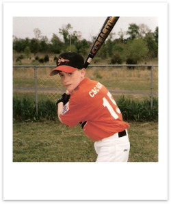

Freshman Year (02'-03' - Age 14)
Finally the awkward days of middle school were over, but high school was a whole new animal to tame. I continued to be my shy and reserved self, and feel like I started to back out of the limelight even further as I got older. I always had my crew of friends to hang with and plenty of interests to keep me occupied, so while I feel like I probably missed out on some things in High School, I stayed busy and happy.
I attended the newly built Musselman High for all four years of my high school career. It was a much bigger and nicer school then what we had before, located just a couple minutes away from the middle school. I liked the freedom of having more choice over the classes I took, and decided to try out some computer programming classes. I absolutely loved them, and as dorky as it sounds, programming become a new passion for me during the next couple of years. I would spend hours outside of class trying new things and researching on the internet, and honestly started to become very good at it. We were taught to program in a very simple programming language called BASIC, so its capabilities were limited, but I found ways to push things. I had quickly mastered all of the procedural basics, and had become fairly proficient with graphics and building simple physics engines. During the middle of that year I built a platform game called shades, where you play as red circle dude with cool black sunglasses that had to battle evil square nerds. I even programmed these funny little cutscenes between each level that would tell a story about how you were trying to rescue your imprisoned people.
My final project that year was a skateboarding game; my crowning programming achievement up to that point. I designed a flashy opening title screen, which brought you to a menu where you could customize your skater's appearance and skateboarding style. There were 4 or 5 different tricks you do, including a couple flip tricks, an indy grab, and also nosegrind on any grind rail or trashcan. Your skater would ride through a series of screens with different rails, stairsets and other obstacles, and the program would keep score based on the tricks you were able to land. From what I hear my skateboarding game is still loaded onto the computers for all the programming students to see.
I believe it was in my Freshman year that I played my last season of baseball. I played that year and the previous one on the Orioles at South Berkeley's Junior League, which is one step after Little League. I never was especially good, but I loved it as much as I did when I was younger. I played centerfield, and sometimes I take over at second or third base. I was a pretty small kid, so definitely didn't have any power when I batted, but I was quick and was often used as a pinch runner.
Freshman year I started attending early-morning seminary at 6:15am, which I always did faithfully, but getting myself out of bed was a struggle. Seminary during that year was held at the teacher's home, Sister McRoberts, which luckily was only a 2 minute drive away so I managed to squeeze in a couple more winks each morning. I feel like I always enjoyed it, and even I wasn't quite conscious enough to learn as much as I would have liked, I benefited from developing the commitment to go and do something hard that I knew was right. Since about the age of twelve I had been praying and reading my scriptures daily, and I'm confident that those things, along with starting my days with seminary helped a lot to keep my on the straight and narrow.
This year I almost made my next advancement in the priesthood by being ordained to the office of a teacher. As I had as a deacon, I stayed diligent in my priesthood responsibilities, and was always there to prepare the sacrament each Sunday morning, and was more than happy to help pass as well. If I remember right, at the time we had very few deacons in our ward, so I often had that opportunity.
Turning 14 also brings a couple of other changes for youth in the church; I was now able to attend the stake youth dances and Youth Conference. Being the reserved guy that I am I was never to fond of the dances, but I would attend them from time to time. I loved Youth Conference though, and I had a great time my first year. Most of that conference was just held up at the stake center in Winchester, and we had a bunch of activities and workshops in and around the building. What I remember most about conference that first year was the new friends that I made. After the activities were finished each day we would stay the night over at one of the member's homes that lived in the area. Tyler Keys and I both attended that year, and we were randomly chosen to stay with a kid named Lucas Fullmer. Lucas turned out to be a way cool kid; he had the craziest, funniest sense of humor. We stayed up way later than we should have both nights goofing off, but man was it fun. I can't remember half of what we did, probably just talking and joking most the night. It was great to hang with Lucas at Youth Conferences in years to come.
Continue to "Sophomore Year" >>